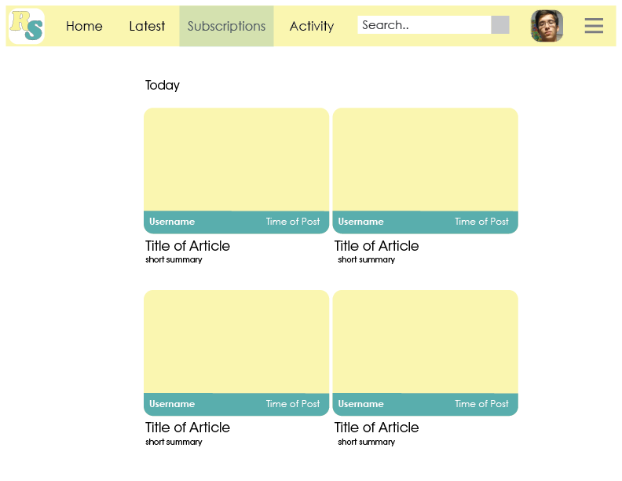

Comp 1
My first comp design. It's very similar to Youtube's format, but it can get pretty complex with all the features it may have.
My first comp design. It's very similar to Youtube's format, but it can get pretty complex with all the features it may have.
My other iteration of the design for my recipe share site. It's much simpler and subcription is based on whether you click on the user to actually subscribe, or go on their content. I have to admit, I like this design better because it feels much more feasible for me to do.
+++++++++++++++++++++++++++++++